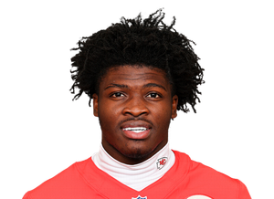

BALL KEEP
Dynasty · Redraft
Player File · RB KC

Brashard Smith
RB · KC · 23 · SMU
Keep avg249.75
# Boards4
BK Value69
Spread189–318
The Keep#253BK 69
SF Redraft#258BK 64
Board graph
Spread 189–318 · 4 sources
Every Board
Spread 189–318 · 4 sources
| Source | Rank |
|---|---|
| PFN (Katz/Soppe) | 189 |
| Dynasty Nerds | 241 |
| FantasyPros ECR | 251 |
| KeepTradeCut SF | 318 |
On The Keep nearby — Darnell Mooney (#251) · Theo Johnson (#252) · Jordan James (#254) · Adam Randall (#255)
All player pages · The Keep · Recent deals · Hot 'n' Cold · BK News